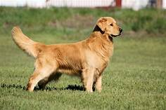

| Name | img | about him |
|---|---|---|
| Border Collie | Is medium-sized and natural-looking Has a handsome, easy-groom coat Is very athletic and thrives on TONS of exercise and training Is exceptionally intelligent and versatile – when well-trained, can learn and do almost anything Will play fetch for hours and hours.... | |
| German Shephard | About the Breed Generally considered dogkind's finest all-purpose worker, the German Shepherd Dog is a large, agile, muscular dog of noble character and high intelligence. Loyal, confident, courageous, and steady, the German Shepherd is truly a dog lover's delight. | |
| Golden Retriever |  | Today, golden retrievers are not only good bird dogs and family pets; they also are popular as service dogs for the blind and disabled, and as search and rescue dogs and contraband detection dogs. Few dogs can claim this breed's versatility. |